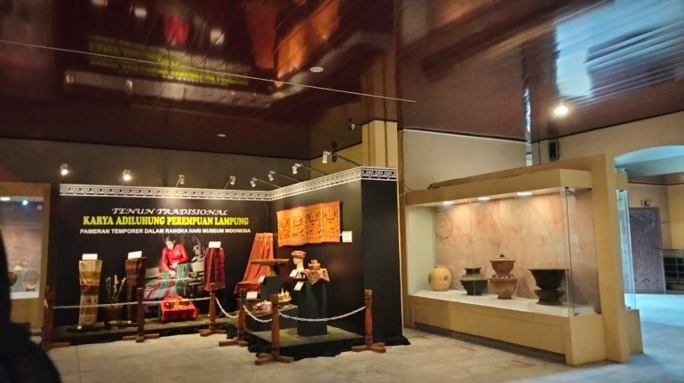

museum lampung
Museum Lampung adalah lembaga tempat perawatan, pengamatan dan pelestarian benda-benda material hasil budaya manusia serta alam dan lingkungan yang ada di provinsi lampung yang berisi benda-benda peninggalan bersejarah. Museum Negeri Lampung diresmikan oleh Menteri Pendidikan dan Kebudayaan, Prof. Dr. Fuad Hasan pada tanggal 24 September 1988.
sejarah
Pada tahun 1972, sebuah yayasan bernama Yayasan Pusat Studi Lingkungan (Yayasan PSL) yang berbasis di Bandar Lampung mendirikan sebuah museum dengan tujuan untuk melestarikan dan memamerkan artefak-artefak budaya dan lingkungan yang ada di Provinsi Lampung. Museum ini awalnya dikenal dengan nama "Museum Daerah Lampung." Pada tahun 1986, nama museum ini diubah menjadi "Museum Negeri Provinsi Lampung."
Museum ini kemudian mengalami perkembangan yang cukup signifikan dalam hal koleksi dan fasilitasnya. Museum Negeri Provinsi Lampung memiliki berbagai koleksi yang mencakup artefak-arafak budaya, etnografi, sejarah, arkeologi, dan lingkungan yang mewakili warisan budaya dan alam Provinsi Lampung. Koleksi tersebut mencakup benda-benda seperti alat-alat rumah tangga tradisional, senjata, alat musik tradisional, tekstil tradisional, serta berbagai artefak yang terkait dengan budaya masyarakat Lampung. Selain koleksinya, museum ini juga memiliki perpustakaan yang berisi koleksi buku-buku yang berhubungan dengan sejarah, budaya, dan lingkungan Lampung. 
Keistimewaan museum lampung sendiri, yaitu karena keunikan koleksi koleksi bersejarah yang menjadi ciri khas dari adat istiadat provinsi lampung.Koleksi museum juga termasuk benda Kerajaan peninggalan Sriwijaya masa dimana Lampung masuk ke dalam wilayah kekuasaannya.
Saat berkunjung ke museum ini wisatawan dapat melakukan penelitian, belajar, dan rekreasi. Wisatawan juga dapat berswafoto dengan koleksi-koleksi yang terdapat di museum, namun wisatawan dilarang untuk menyentuh koleksi yang ada didalamnya guna menjaga keaslian benda-benda bersejarah agar tidak rusak.
keterangan
museum lampung
tanggal terbit
2-11-2024